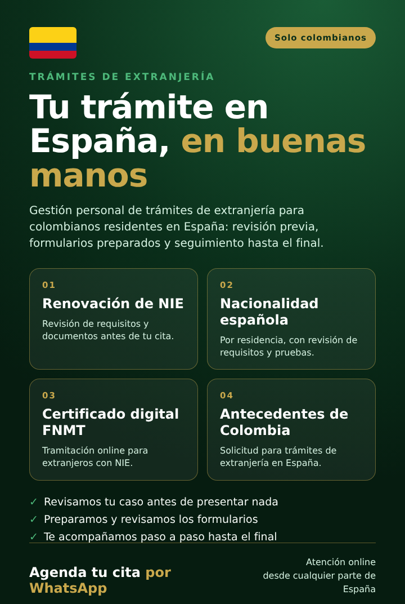

Renovación de NIE
Renovación de NIE para colombianos en España, con revisión de documentos antes de tu cita.
50€
Solicitar
Renovación de NIE, nacionalidad española, certificado digital y antecedentes penales de Colombia. Revisamos tu caso y preparamos tu expediente para reducir errores.

Si te piden los antecedentes penales de Colombia o no sabes por dónde empezar, no estás solo.
Los requisitos cambian según tu caso. Presentar de más o de menos cuesta tiempo.
Caducidades, citas previas y requerimientos con fecha límite. Perder una cita complica todo.
Antecedentes penales y otros papeles del país de origen: ¿cuáles, cómo y cuándo pedirlos?
Cada servicio está pensado para quitarte una preocupación concreta.
Revisamos tus documentos y los requisitos según tu caso concreto.
Preparamos y presentamos los formularios para que no pierdas citas ni tiempo.
Te guiamos paso a paso durante todo el proceso y seguimos tu expediente.
Cuéntanos tu caso por WhatsApp o correo en un par de minutos.
Te explicamos requisitos y pasos antes de empezar.
Hacemos los formularios y seguimos tu expediente hasta el final.
Las tasas oficiales son a tu cargo en todos los casos.
| Concepto | Por tu cuenta | Con un abogado | Con nosotros |
|---|---|---|---|
| Revisión de requisitos según tu caso | Tú la haces | Según el despacho | ✓Incluida |
| Formularios preparados y revisados | Tú los rellenas | Según el despacho | ✓Incluidos |
| Seguimiento personalizado | Tú lo sigues | Según el despacho | ✓Personalizado para tu caso |
| Precio | Según tu caso | Más alto | ✓Precios publicados en esta web |
| Experiencia en estos trámites | La vas adquiriendo | Formación jurídica | ✓Experiencia práctica en trámites de extranjería |
| Riesgo de repetir el trámite por un error | ✗Depende de tu experiencia | Depende del despacho | ✓Menor riesgo |
| Tasas oficiales | A tu cargo | A tu cargo | A tu cargo |
Elige el trámite que necesitas. Si dudas cuál es, te orientamos primero.
Renovación de NIE para colombianos en España, con revisión de documentos antes de tu cita.
Nacionalidad española por residencia para colombianos (2 años de residencia legal y continuada), con revisión de requisitos.
Tramitación del certificado digital FNMT para extranjeros con NIE, online.
Solicitud de antecedentes penales de Colombia para trámites de extranjería en España.
¿Qué incluye? Revisión de requisitos según tu caso, preparación y presentación de formularios, orientación paso a paso y seguimiento de tu expediente. Los precios no incluyen las tasas oficiales de la Administración ni de otros organismos.
Quién presta el servicio y cómo tratamos tus datos.
Jhony Escobar. Tramita personalmente cada expediente de extranjería.
Revisamos tu documentación antes de presentarla y te decimos qué requisitos aplican a tu caso. No garantizamos el resultado: lo decide la Administración.
Tu nombre solo se usa para abrir el chat de WhatsApp. Consulta la política de privacidad y el aviso legal.
El número NIE no caduca. Lo que se renueva es tu autorización de residencia y, después, la tarjeta TIE. Revisamos que tu pasaporte, tus justificantes y tus datos coincidan en todos los formularios antes de presentar nada, para evitar que te pidan subsanar.
Depende del trámite y de la oficina. La solicitud de renovación se puede presentar por vía electrónica, mientras que la toma de huellas y la entrega de la tarjeta TIE son presenciales en la Policía, y suelen requerir cita. Te indicamos qué papeles preparar para cada paso.
El plazo se cuenta a partir de la fecha de caducidad que figura en tu autorización. Presentarla fuera de plazo puede acarrear sanciones, así que conviene revisar la fecha con tiempo. Te decimos cuál es el plazo que te corresponde según tu caso.
Los plazos de resolución los marca la Administración y varían según el caso y la oficina. Nosotros preparamos tu expediente con rapidez y seguimos su tramitación, pero no podemos prometer fechas de resolución.
Los nacionales de países iberoamericanos, como Colombia, pueden solicitar la nacionalidad española con dos años de residencia legal y continuada en España. Los años con visado de turista o en situación irregular no cuentan.
Para la nacionalidad por residencia se exige superar el examen CCSE de conocimientos constitucionales y socioculturales, además de cumplir los requisitos de residencia y de buena conducta. Según tu situación, puede aplicarse una exención de la prueba de idioma. Lo revisamos contigo antes de inscribirte.
Nuestro precio de nacionalidad cubre la revisión de requisitos, la preparación y presentación de formularios y el seguimiento de tu expediente. No incluye la tasa oficial que cobra la Administración ni el examen CCSE, que se pagan aparte.
Necesitas un NIE válido y tu pasaporte, porque la FNMT contrasta la solicitud con los registros oficiales. La acreditación de identidad presencial en una oficina de registro, con cita previa, es la vía que siempre funciona con NIE. Te acompañamos en la solicitud online y en la cita.
El certificado de persona física de la FNMT es gratuito. Algunas vías de acreditación de identidad pueden tener un coste aparte, y te lo indicamos antes de empezar.
Se piden en el portal de la Cancillería de Colombia, en la opción de certificado con fines migratorios, y después se apostillan en la misma Cancillería. Si eres extranjero, la Policía Nacional debe emitir primero una constancia que se sube al portal. Te guiamos en cada paso.
Sí. Las oficinas españolas suelen exigir que el certificado tenga una antigüedad máxima. Por eso te recomendamos pedirlo cuando ya tengas fecha de cita o de presentación, y revisamos el plazo exigido por la oficina que lo pide.
Puedes hacerlo tú mismo, siempre que tengas tiempo y dominio de la sede electrónica y de los formularios. Una gestoría de extranjería te ayuda a revisar los requisitos, evitar errores y no perder citas ni plazos.
Nadie puede garantizar el resultado de un trámite. Reducimos el riesgo revisando todo antes de presentar y te orientamos si llega un requerimiento. Si llega un requerimiento, te orientamos sobre cómo responderlo.
Tu trámite, nuestra prioridad. Atención online por WhatsApp y correo, desde cualquier parte.
Escribir por WhatsAppAtención online desde cualquier parte de España.